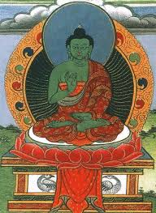

Амогхасиддхи является одним из пяти Будд высшей Мудрости в Тибетском Буддизме, также как и другие он происходит от первоначального Ади-Будды, эти пять Дхьяни Будд соответствуют пяти осознаваемым аспектам реальности, пяти скандхам. Имя Будды Амогасиддхи переводится как "Сила без поражений". Амогасиддхи представляет семейство «Карма» в соединении со своей шакти Самайя Тарой, которая воплощает мудрость способную совершать все деяния.
В иконографии Амогасиддхи изображают сидящего в медитативной позе на лотосовом троне, его правая рука сложена у груди в абхая-мудре, ладонь развёрнута наружу, пальцы выпрямлены. В левой руке он держит вишваваджру, эта рука либо покоится на бедре с развёрнутой вверх ладонью, либо находится возле груди, ниже правой руки (но часто можно встретить статуэтки, где он держит вместо вишваваджры чашу). Тело Амогасиддхи изображают зелёного цвета.